Introduction
Datasets are the primary structure for organizing data in GeoDatalytics. Each dataset has one or more layers that can be visualized on the map. Each layer has one or more frames; most layers are single-frame, but multi-frame layers can be used to depict a third data dimension like time. Each frame can contain raster or vector data.
GeoDatalytics is an open-science platform, so all datasets are publicly accessible. If you are uploading your own dataset, ensure that no private data is included.
Projects are the organizational structure that allows you to group datasets together for a particular use case or study. See the Project Configuration documentation for more information about selecting datasets for a project. The project configuration interface is also where you will find the button to upload your own dataset.
Note
If you are not logged in, you will not have access to upload a new dataset.
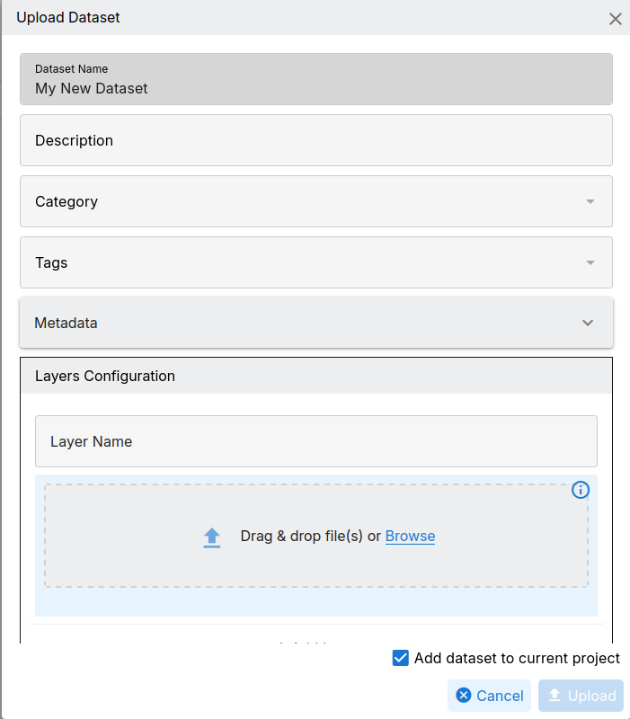
Dataset Creation Form
Once you open the project configuration interface (see Project Configuration documentation), the Dataset Selection tab is open by default. At the top of the All Datasets list, there is a blue “Upload New Dataset” button. Clicking on this button will open a dialog with a form to enter information about the new dataset you will create.
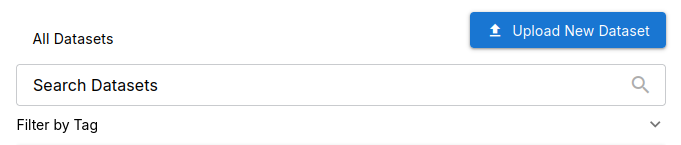
The first three fields in the dataset creation form are required.
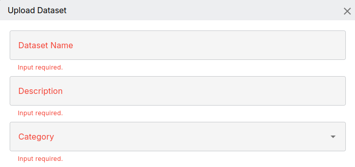
-
The dataset must have a unique name that is less than 255 characters. Ensure that the name you choose is descriptive and succinct.
-
The dataset must also have a description; the description does not have a length limitation, but it should be about a sentence long. The description value will be shown in a tooltip next to the dataset name.
-
The dataset must also have a category. The category input is a combobox, meaning that a dropdown will show available existing category values that you may choose from. But if you do not see any categories appropriate for your dataset, you may also create a new category. When you type a new category value into this input, a tooltip will appear to notify you that you will be creating a new category.
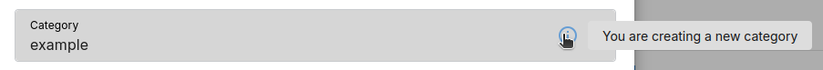
As an example of how the name, description, and category values are used, the screenshot below shows a dataset as it appears in the dataset list. The dataset has the name “Boston Orthoimagery” and it belongs to the “imagery” category. Dataset lists are organized by category, so this dataset appears under the “imagery” collapsible section. The dataset row includes an information icon; hovering over this icon will show a tooltip with the dataset’s description.
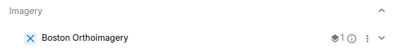
Dataset Tags
The next input in the dataset creation form is the tag selection. This input is also a combobox, but unlike the category input, this input allows you to specify multiple values. When this input is focused, a dropdown appears with existing tag options. You may select any number of these existing values.
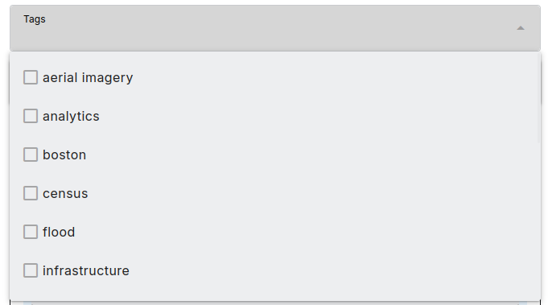
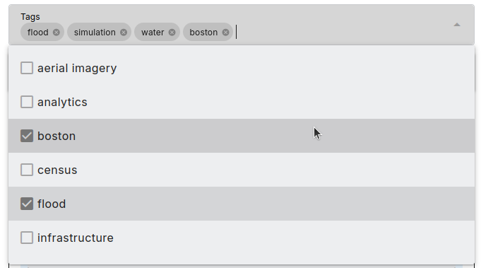
You may also type a new tag into this input. The typed input acts primarily as a filter on the existing tags in the dropdown, but if no matches are found, you can press the enter key or unfocus the input to submit the typed input as a new tag. Once you do, a tooltip will appear to notify you that you will be creating a new tag. The tag will only be created in the database when you submit the form.
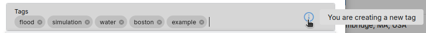
As an example of how tags are used, the screenshot below shows the tag filter control on the dataset list. The filters control is collapsed by default but can be expanded to show a similar combobox control. You can type in the input to filter the dropdown and you can select one or more existing tags to filter the dataset list. This screenshot shows that the “boston” tag has been selected, so the dataset list is filtered to only include datasets with the tag “boston”. The dataset named “MBTA Rapid Transit” is expanded to show its tags and layers. Dataset tags are shown as chips. This dataset has three tags: “boston”, “network”, and “public transit”.
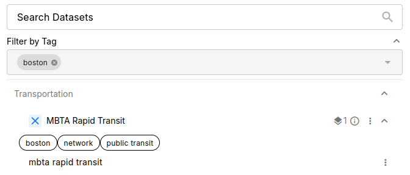
Dataset Metadata
You may optionally specify any other useful information about your dataset in its metadata. The metadata input is collapsed by default on the dataset creation form, but expanding it will show a JSON editor. Dataset metadata is a JSON value but is otherwise unstructured. You can add string, numeric, boolean, and nested values in this JSON.
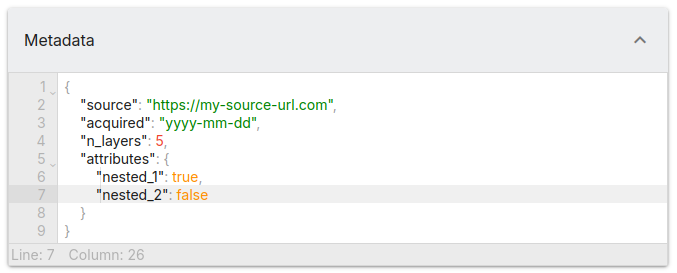
A dataset’s metadata is only shown in its details dialog, which can be opened by clicking on the vertical three-dots icon that appears to the right of the dataset’s name in the dataset list.
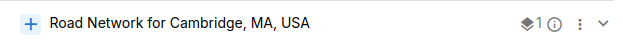
In the details dialog, the metadata is shown as a structured table. Key names will have underscores replaced with spaces. Nested values will also be shown as a structured table.
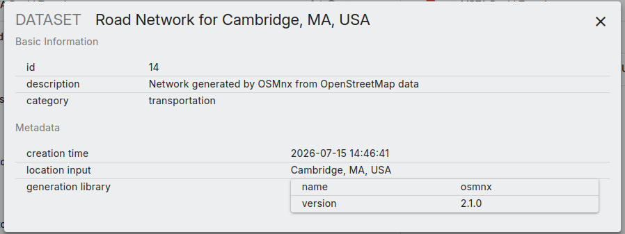
Layers Configuration
At the bottom of the dataset creation form, there is a final section titled “Layers Configuration”. This is where you can specify the data contents of the dataset. As mentioned in the introduction above, each dataset has one or more layers. This section of the form allows you to create those layers, giving each one a name and file set.
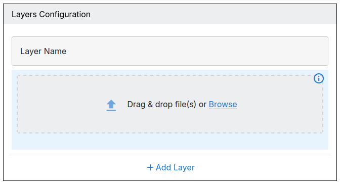
By default, this section shows a single layer to be configured, followed by a blue “+ Add Layer” button. Clicking this button will add more layers to the list. Only one layer in the list can be edited at a time, so other layers will be shown as collapsed sections. The collapsed sections show the layer name, a pencil icon, and a trash icon. The pencil icon will expand that layer for editing, collapsing all other layers. The trash icon will remove that layer from the list.
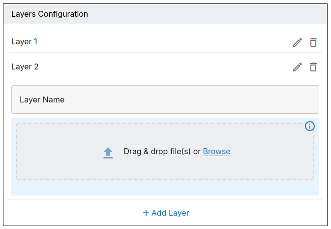
For each layer in the list, you must specify a name (unique among the other layers on this dataset) and one or more files. The file input allows you to drag and drop or click to browse your local filesystem. The behavior of the file input will adapt to the number of files you select and the types of those files. Currently, the file input only accepts .json, .geojson, .tif, .tiff, and .zip files.
The tooltip in the top right corner of the file input area says “Upload files to create a sequence of frames, or upload a single file to optionally split into frames.” As mentioned in the introduction above, each layer has one or more frames. Most layers only need a single frame, but multiple frames can be used to depict time or any other additional dimension of your data. When visualized on the map, multiframe layers will appear with a frame slider in the Selected Layers panel.
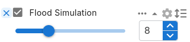
If you upload multiple files to the same layer, each file will be treated as a separate frame. The frames will be ordered according to the file names, so it is recommended that you number them clearly. The same behavior applies if you upload a single ZIP file; each file contained within the ZIP will be treated as a separate frame.
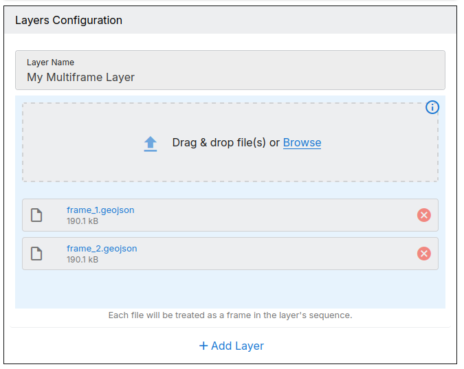
If you only upload a single file, an additional control will appear below the file upload. This control allows you to toggle between “Add as single frame” and “Add as multi-frame” (the former is selected by default). Adding the file as a single frame will not split the file’s contents in any way. Adding the file as multi-frame will split the file’s contents into multiple frames; the frame splitting behavior depends on the type of file you upload.
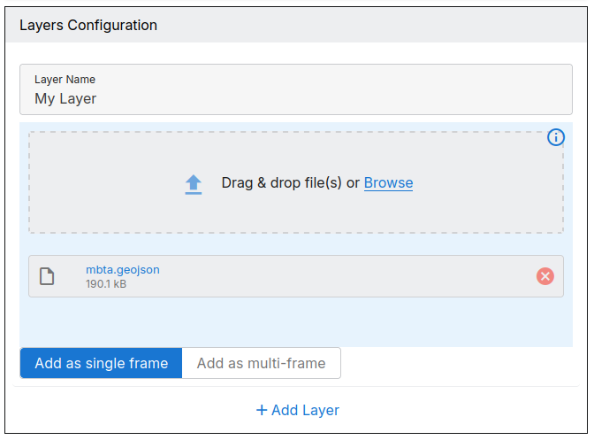
If you are uploading vector data (a .geojson or .json with georeferencing), then switching to “Add as multi-frame” mode will make a “frame property” text input appear. The tooltip to the right of this input says “Enter the name of an ordered feature property that corresponds to frame”. This means that you can split the vector features into frames according to a particular property. Each frame created will have a name that corresponds to a value for that property present in your data.
For example, the features in your vector data file may have a “frame” property with integer values between 1 and 10. If you enter “frame” in the frame property input, your layer will have ten frames, each named with a number between 1 and 10. The frame slider for that layer will allow you to scrub through the frames in order. Each frame will show only the features that have the corresponding “frame” value.
As a more complex example, your vector data file may have a “timestamp” property with string values that are formatted as “YYYY-MM-DD hh:mm:ss”. If you enter “timestamp” in the frame property input, your layer will have a frame for each unique timestamp value. The frames will be ordered correctly if the timestamp format can be parsed.
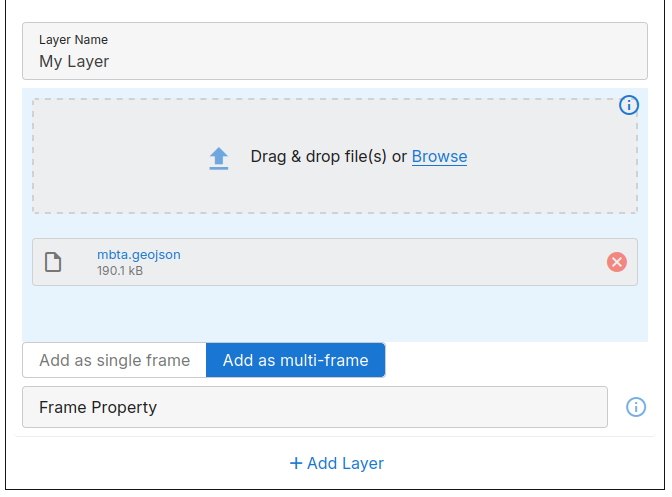
If you are uploading raster data (a .tif or .tiff with georeferencing), then switching to “Add as multi-frame” mode will make an additional toggle appear with two options: “Split by raster frame” and “Split by raster band”. It is recommended that you should know the structure of your raster file before attempting to split it; some rasters are structured with multiple frames and/or multiple bands.
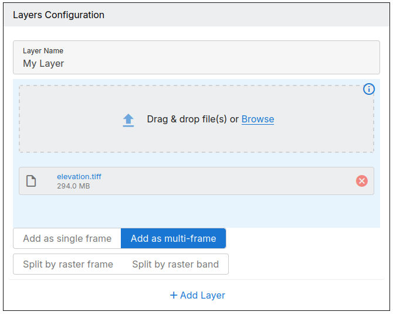
One additional thing to note about the file uploads in the Layer Configuration section is that files are limited to a maximum size of 2 GB. Attempting to upload a larger file will result in an error, as shown in the screenshot below. This limitation exists to protect the application from abuse. If you have a need to upload larger datasets, please Contact Kitware so we can accomodate your use case.
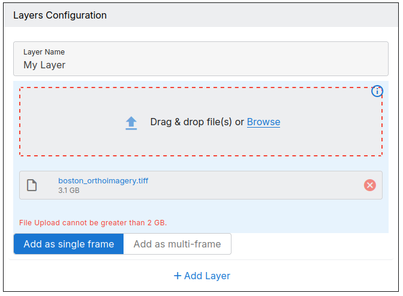
Submitting The Form
At the bottom of the dataset creation form, there is a set of form controls. The first control is a checkbox labelled “Add dataset to current project”, and it is checked by default. If this control is checked when the form is submitted, then the created dataset will be automatically added to the project that was selected in the project configuration interface when you opened the form. If this checkbox is unchecked, you can always add the created dataset to your project later.
Below the checkbox, there are two buttons. The “Cancel” button will close the form and discard your form inputs. The blue “Upload” button will submit the form and begin the dataset creation process.
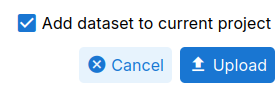
After submitting, the form will be closed and the dataset lists shown in the project configuration interface will refresh. Your new dataset will appear in the “All datasets” list (and in the “Project Datasets” list if the aforementioned checkbox was checked).
The newly uploaded dataset will undergo a processing step, which may take some time depending on the size of the data. The following section explains more about this processing step. During the processing, the dataset will be shown with an animated loading circle beside the name (instead of any action buttons allowing you to add the dataset to the project or remove it). The dataset will be shown as having zero layers; the layers are being created as part of the processing step.
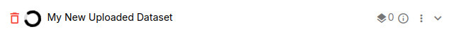
Once the processing step is completed, the dataset list item will be updated to show the newly created layers on that dataset. The animated loading circle will be replaced with the appropriate icon or button according to the presence of the dataset on the current project.
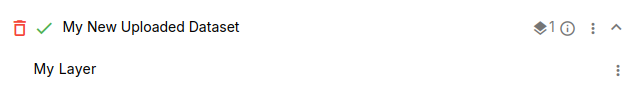
Since you were the one to create the uploaded dataset, you also have permission to delete it, and a red trash icon will appear next to the dataset name. Clicking on this icon will open a dialog asking you to confirm whether you want to delete the dataset.
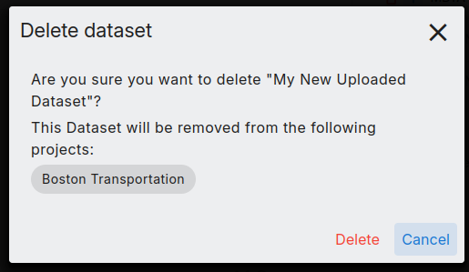
Dataset Processing Task
When a new dataset is created, it must undergo a processing task which converts the raw data files to standardized formats and specialized database representations optimized for visualization and analysis. The dataset processing task consists of two steps: file conversion and layer creation. This processing task occurs in the background, so you can continue using the application while your dataset is processing. Once the processing task is complete, your dataset will be ready to visualize and explore on the map.
File Conversion
The file conversion step will reformat the raw input files as standardized formats and save specialized database representations of the data.
All raster data is converted to Cloud-Optimized GeoTIFF, or COG. This pyramidal TIFF structure stores different resolutions of the data to be shown at different zoom levels. This is why a raster layer will appear to have a lower resolution when the map is zoomed out, and it will appear to increase in resolution when you zoom in.
All vector data is converted to GeoJSON, and a specialized database representation is created for each vector feature. These database representations store the geometry of the feature as a point, line, or polygon. Feature properties are stored as a JSON field. These feature representations are optimized for geospatial queries, such as the ones used to serve the tiles shown when you add the layer to the map. Other geospatial queries can be used within an Analytics task to get features by their location and properties.
There are also special vector features that require an additional advanced representation. If a dataset depicts regions or networks, an additional processing step can be applied to represent the data with Region objects or a set of Network Node and Network Edge objects belonging to a Network object. These advanced representations are optimized for particular kinds of geospatial queries. The dataset upload form in the user interface does not cover this advanced use case, though, so Contact Kitware for support with these kinds of datasets.
Layer Creation
Once the data has been converted and specialized database representations of the data exist, the layer creation process will create a set of Layer and LayerFrame objects with references to the data representations. This process will create one or more layers on the dataset, and each layer will have one or more frames. These will be created in accordance with the configuration you specified in the dataset upload form. If you are creating a dataset via the API and fail to specify a layer configuration, a default layer configuration will be created automatically according to the dataset contents.